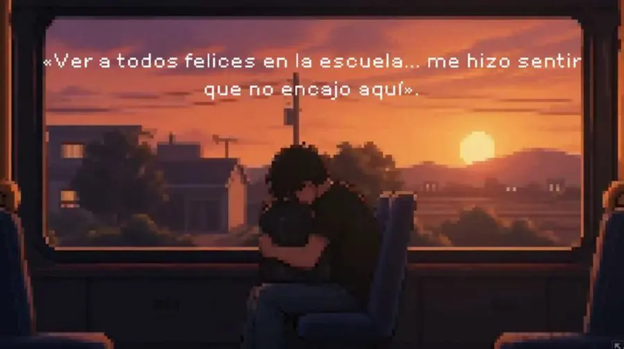
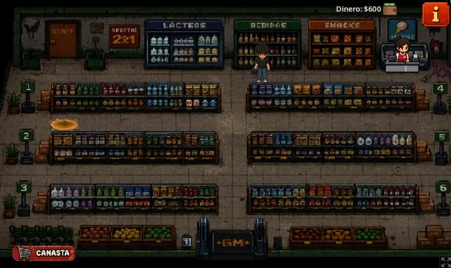
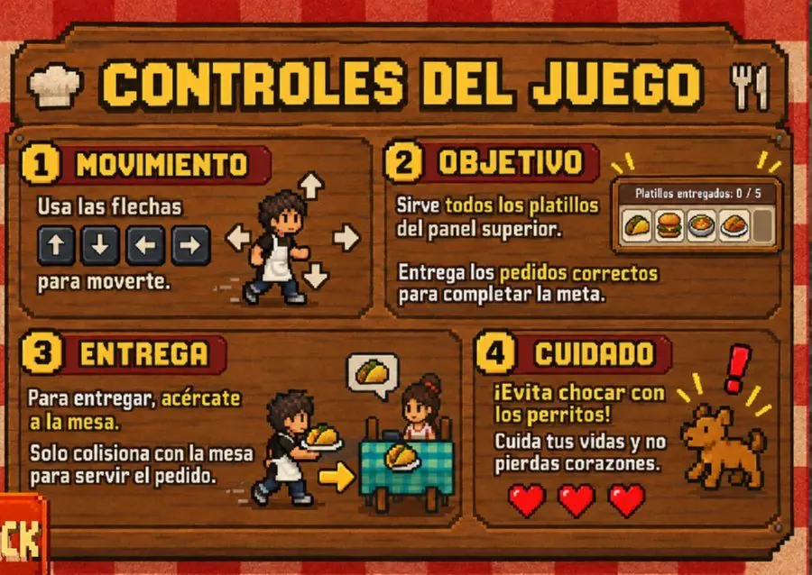

Autor(es):
Maria Fernanda Suárez Arias
Aldair Eddiel Canul Cabrera
Aaron David Chi Uc
Asesores:
Dr. J. Ramírez, Dr. J. Flores
Escuela: Universidad Autónoma de Campeche
Nivel: Universidad
Categoría: Desarrollo de software
41067
RESUMEN
El proyecto Fora de Lugar desarrolla un videojuego narrativo en 2D centrado en visibilizar las dificultades económicas, emocionales y sociales de los estudiantes foráneos en Campeche. Su objetivo es transformar la percepción social en el entorno universitario mediante la empatía.
PROBLEMA
¿Es posible desarrollar una experiencia interactiva que identifique con precisión los retos cotidianos de los foráneos y presente información útil para generar empatía en los locales?
HIPÓTESIS
La inmersión interactiva en las problemáticas simuladas incrementará significativamente los índices de comprensión y empatía de los estudiantes locales.
RETOS EVALUADOS
EXPERIMENTO Y DESARROLLO
El modelo utilizó una metodología mixta en 5 fases. Se recopilaron datos de 50 estudiantes foráneos para programar las mecánicas en Godot. El prototipo integró módulos de gestión de tiempo y minijuegos (pixel-art). Se aplicó un pre-test a 85 estudiantes locales, seguido de sesiones de juego y un post-test a 63 usuarios.



ARQUITECTURA Y TECNOLOGÍAS
Implementación de mecánicas, máquinas de estado y UI utilizando el lenguaje GDScript y sistema de nodos.
Gestión de ramas de desarrollo, commits atómicos y trabajo colaborativo mediante repositorio remoto.
Creación de spritesheets, tilesets y animaciones frame-by-frame respetando paletas de color unificadas.
WORKFLOW: GODOT & GITHUB
El desarrollo colaborativo se estructuró para mantener un código limpio, modular y libre de conflictos durante la integración del proyecto:
- 📦 Arquitectura de Nodos (Godot): Uso intensivo de Singletons (Autoloads) para variables globales (presupuesto, energía) y un patrón de diseño basado en Señales para desacoplar la UI de la lógica del juego.
- 🌿 Control de Ramas (Git): Implementación de Git Flow. Rama
mainprotegida para versiones estables,devpara integración continua y ramasfeature/para programar cada nuevo minijuego por separado. - 🔄 Gestión de Tareas: Organización de sprints mediante el tablero Kanban de GitHub Projects, vinculando Issues directamente con los commits de avance de cada desarrollador.
ANÁLISIS DE RESULTADOS
Gráfica de evolución de concientización (escala Likert). Pre-test vs Post-test. La inmersión interactiva demostró ser una herramienta eficaz para modificar percepciones en un entorno universitario controlado.
PLATAFORMA WEB
Escanea para acceder a la demo jugable
RESULTADO
El sistema demostró incrementos estadísticos en empatía cognitiva. Se visibilizaron parámetros de soledad y presupuesto. El 78% de los foráneos validó la simulación.
- 4,64 → 4,86Media concientización (de 5)
- 90% → 95%Acuerdo general post-test
CONCLUSIÓN
Sí se cumplió la hipótesis: la combinación de narrativas interactivas con minijuegos permitió desarrollar un modelo altamente efectivo para sensibilizar a la comunidad. Este avance sienta bases para su implementación en programas universitarios, fomentando la integración y el apoyo estudiantil.
BIBLIOGRAFÍA
- Deterding, S. et al. (2011). From game design elements to gamefulness. ACM.
- Muñoz Díaz, L. (2026). Salud mental en estudiantes foráneos. Rev. Psicología.
- Olivier, E. (2019). Empathy building through interactive narrative games. Tech.
- Wouters, P. (2013). Cognitive effects of serious games. Ed. Psychology.